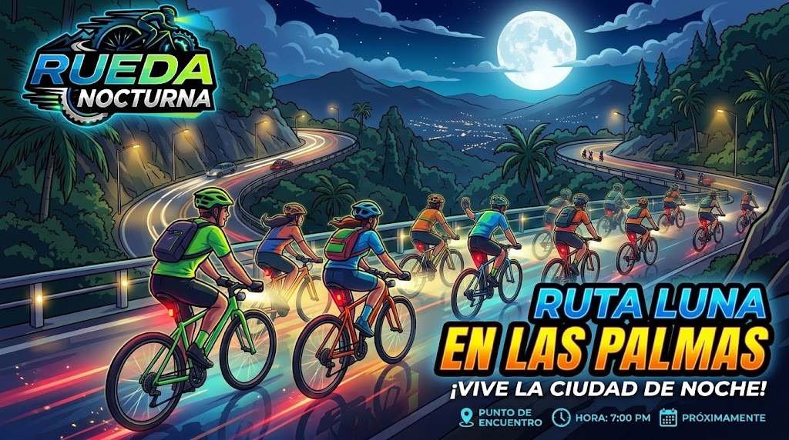

Salida: Jue a Sáb
Salida: Jue a Sáb
Luces del Centro
Nivel: Fácil · 100% Plano- Distancia 10 km
- Duración 2 h
- Punto de encuentro Sede Rueda Nocturna
Rutas Nocturnas en Bicicleta · Medellín, Colombia
Descubre Medellín en bici cuando se encienden las luces. Recorridos guiados por los miradores más bellos, parques y avenidas iluminadas con equipo completo de seguridad incluido.
Elige tu recorrido nocturno
Tres opciones diseñadas para pedalear por Medellín. Cada ruta incluye bicicleta revisada, casco homologado, luces LED, chaleco reflectivo y guías certificados.
Salida: Jue a Sáb
 Salida: Jue a Sáb
Salida: Jue a Sáb

Salida: Jue a SábPaso a Paso
Participar en nuestras rodadas nocturnas por Medellín es simple, seguro y rápido. Sigue estos 4 pasos para vivir la ciudad sobre dos ruedas:
01 Paso 1
Selecciona entre Luces del Centro (plano), Ruta de los Miradores (medio) o Luna en Las Palmas (ascenso) según tu condición física y nivel de experiencia.
02 Paso 2
Diligencia el formulario digital con tu correo y WhatsApp. Apartaremos tu cupo y te pre-asignaremos una bicicleta adecuada según tu estatura.
03 Paso 3
Llega 15 minutos antes a la Sede Rueda Nocturna en Medellín. Te entregaremos bicicleta calibrada, casco sanitizado y luces LED reglamentarias.
04 Paso 4
Vive la noche medellinense en pelotón coordinado con guía líder y guía escoba, asistencia técnica continua y paradas para café y fotos panorámicas.
Inscripción a la Rodada
Ingresa tus datos para preparar tu bicicleta según tu estatura y agregarte al canal de coordinación de la salida en Medellín.
Por protocolos de seguridad vial y para brindar atención personalizada de los guías, cada grupo admite un máximo de 15 ciclistas por noche. Te sugerimos asegurar tu lugar antes de las 5:00 PM del día del recorrido.